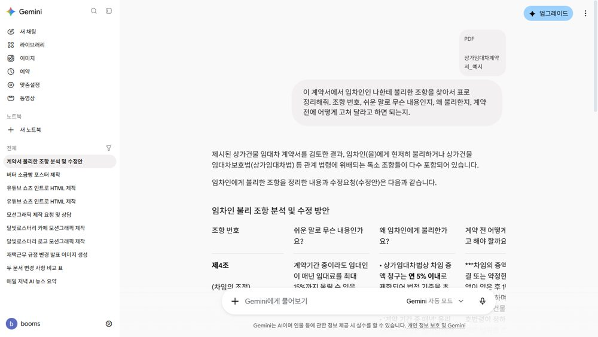
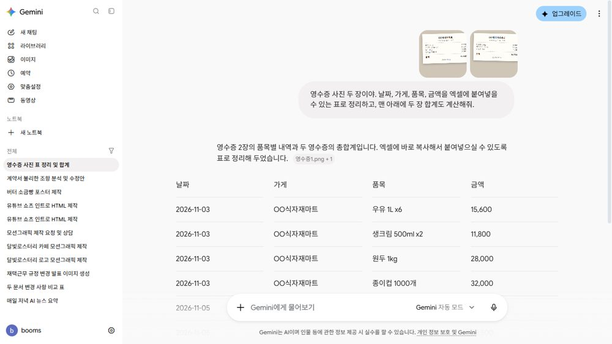
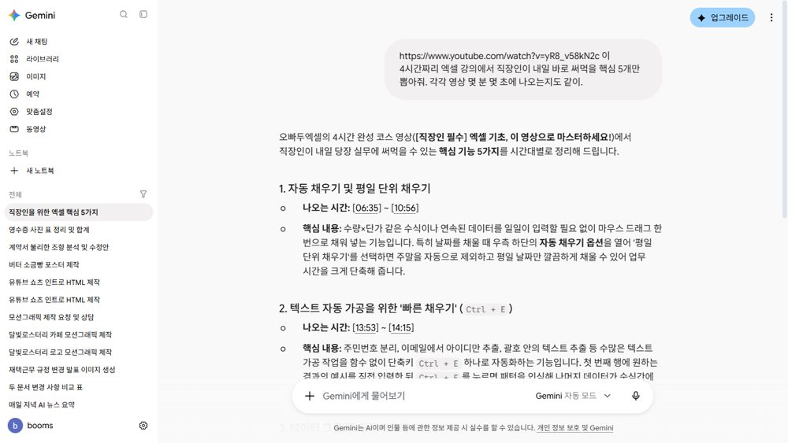
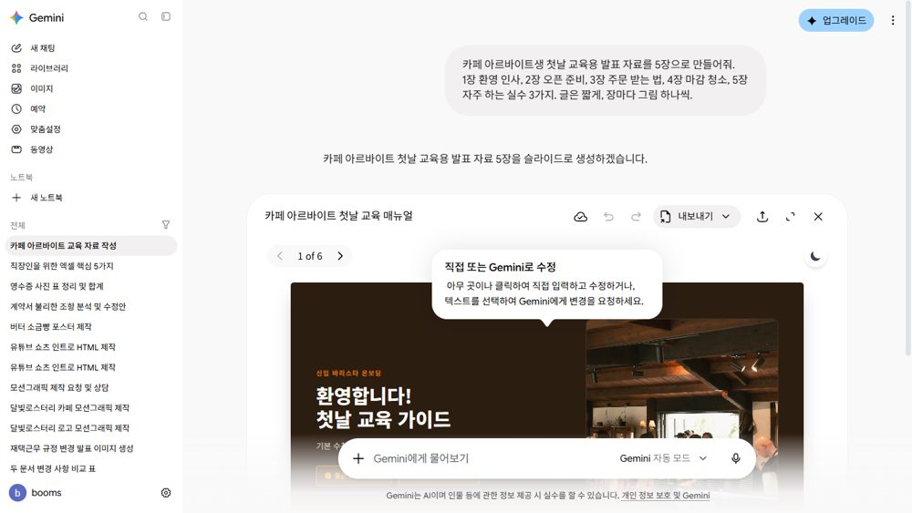
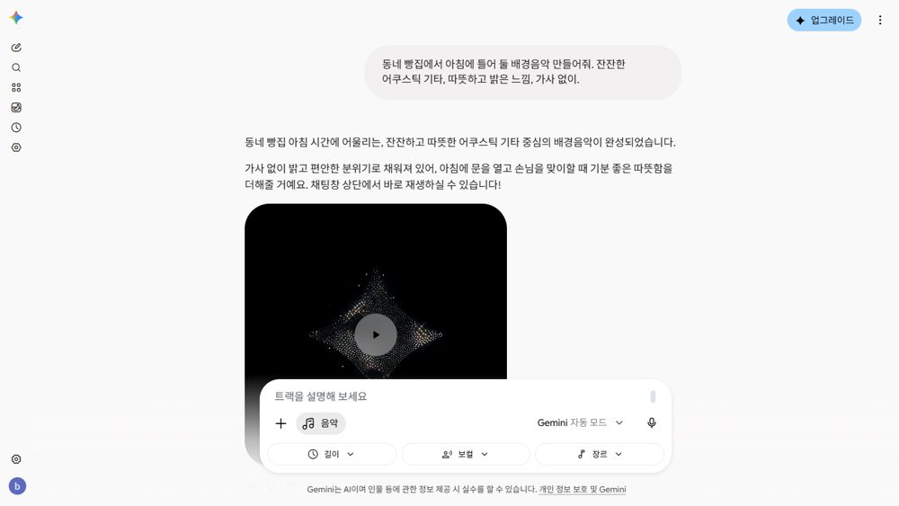
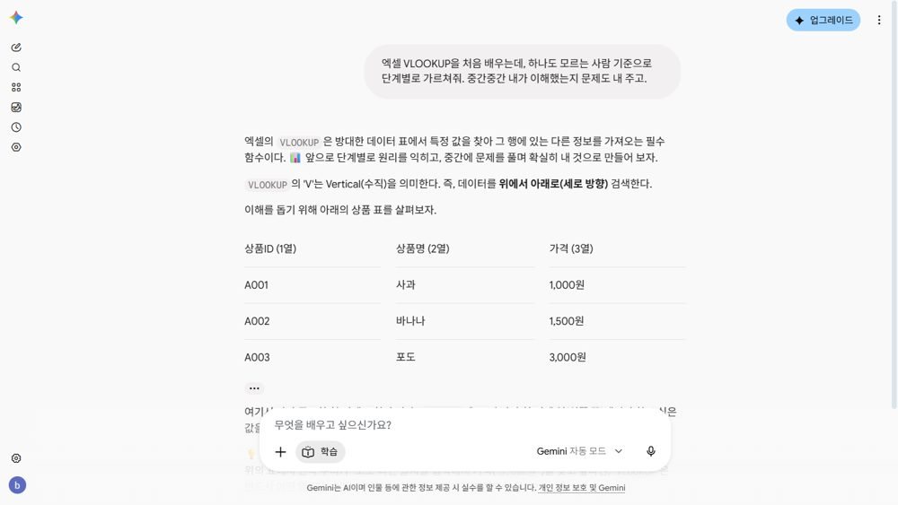
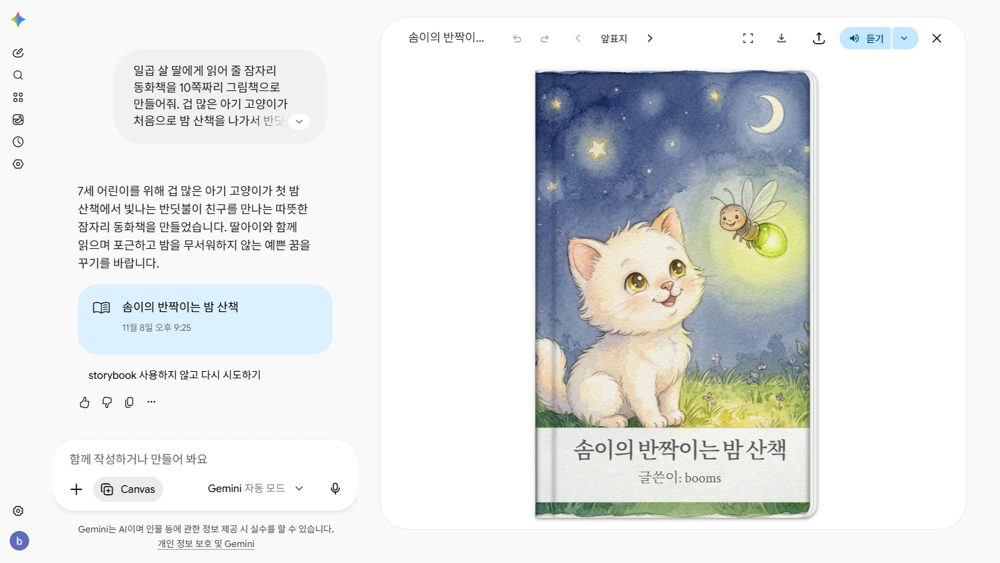
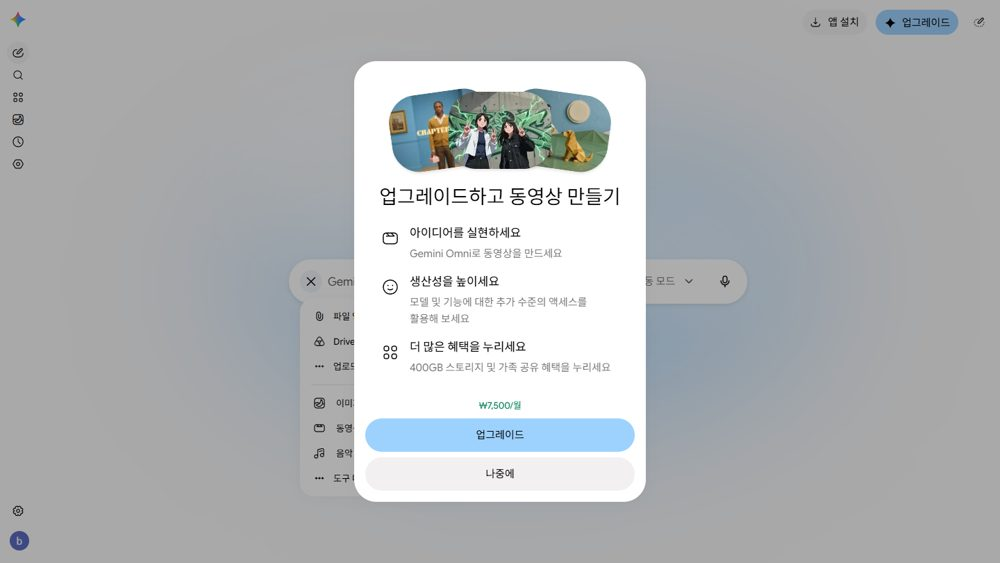
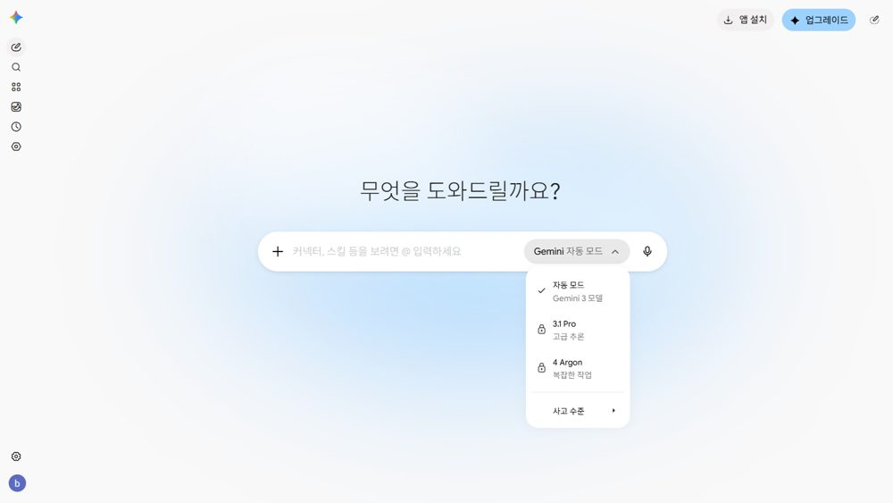

자료실 010
제미나이 무료 계정으로 되는 것 10가지
결제 한 번 안 한 무료 계정 그대로 해 본 10가지예요. 영상에서 쓴 문장 그대로, 어디를 누르는지, 무료로 되는지 안 되는지까지 한 장에 모았어요.
쓰는 법
- 아래 목록에서 해 보고 싶은 걸 누르세요. 처음이면 1번 포스터부터 추천해요.
- 회색 상자의 문장을 「복사하기」 → gemini.google.com 입력창에 붙여 넣기 → 가게 이름·숫자만 내 걸로 바꾸기.
- 기능은 거의 다 입력창 왼쪽 + 안에 있어요. 「도구 더보기」는 마우스를 옆으로 먼저 옮긴 뒤 내려가세요.
한눈에 보기
1 · 포스터 그리기 + 글자만 고치기무료2 · 계약서 PDF 검토무료3 · 영수증 사진 → 엑셀 표무료4 · 긴 유튜브 → 핵심 5개무료5 · 발표 자료 만들기무료6·7 · 딥 리서치 + 듣기무료8 · 가게 배경음악무료9 · 과외 선생님(가이드 학습)무료10 · 아이 그림책무료무료로 되는 것 / 안 되는 것
1 · 가게 포스터 그리기 + 글자만 고치기
무료 · 약 15초 / 고치기 21초 · 「이미지 만들기」
순서
- gemini.google.com → 입력창 왼쪽 + → 이미지 만들기
- 아래 문장 붙여 넣기(가게 이름·글자·가격만 바꾸기) → 보내기
- 같은 대화창에 「고치는 말」 한 줄 → 그림 위 ↓로 내려받기
붙여 넣을 문장
동네 빵집 신메뉴 '버터 소금빵' 홍보 포스터를 만들어줘. 갓 구운 소금빵 3개가 나무 쟁반 위에 있고, 위쪽에 '버터 소금빵 출시'라는 큰 한글, 아래쪽에 '하루 50개 한정 · 2,800원'. 따뜻한 아침 햇살 느낌, 세로 4:5 비율.
고치는 말
가격만 '2,500원'으로 바꿔줘. 나머지는 그대로 두고.
요령 · 그림 속 글자는 '따옴표'로 정확히. 고칠 땐 「○○만 바꿔줘, 나머지는 그대로」.
2 · 계약서 PDF에서 나한테 불리한 조항 찾기
무료 · 17초 · 「파일 업로드」
순서
- gemini.google.com → + → 파일 업로드 → PDF 고르기
- 아래 문장 보내기 — 「임차인인 나한테」처럼 내 입장을 먼저 밝히기
붙여 넣을 문장
이 계약서에서 임차인인 나한테 불리한 조항을 찾아서 표로 정리해줘. 조항 번호, 쉬운 말로 무슨 내용인지, 왜 불리한지, 계약 전에 어떻게 고쳐 달라고 하면 되는지.

주의 · 읽기 전에 쓰는 형광펜이에요. 도장 찍기 전 최종 확인은 전문가에게. 진짜 계약서는 이름·주소를 가리고 올리세요. 법률 자문 아님.
3 · 영수증 사진 → 엑셀 표
무료 · 13초 · 한 번에 파일 10개까지
순서
- + → 파일 업로드 → 영수증 사진 여러 장
- 아래 문장 보내기 → 표 오른쪽 위 복사 → 엑셀에 붙여 넣기
붙여 넣을 문장
영수증 사진 두 장이야. 날짜, 가게, 품목, 금액을 엑셀에 붙여넣을 수 있는 표로 정리하고, 맨 아래에 두 장 합계도 계산해줘.

막히면 · 흐리거나 구겨진 사진은 숫자를 잘못 읽을 수 있어요. 합계만 영수증과 한 번 맞춰 보세요.
4 · 긴 유튜브 강의 → 핵심 5개 + 시각
무료 · 17초 · 유튜브 주소 붙여 넣기
순서
- 유튜브 주소를 복사해 입력창에 붙여 넣기
- 같은 칸에 아래 문장 이어서 보내기 — 「어디에 쓸지·몇 개·몇 분 몇 초」
붙여 넣을 문장
(유튜브 주소 붙여 넣기) 이 4시간짜리 엑셀 강의에서 직장인이 내일 바로 써먹을 핵심 5개만 뽑아줘. 각각 영상 몇 분 몇 초에 나오는지도 같이.

5 · 발표 자료(슬라이드) 만들기
무료 · 39초 · 「Canvas」 → PPTX·PDF
순서
- + → 도구 더보기 → Canvas (마우스는 옆으로 먼저, 그다음 아래로 — 대각선이면 메뉴가 닫혀요)
- 아래 문장 보내기 → 위쪽 내보내기 → PPTX 또는 PDF
붙여 넣을 문장
카페 아르바이트생 첫날 교육용 발표 자료를 5장으로 만들어줘. 1장 환영 인사, 2장 오픈 준비, 3장 주문 받는 법, 4장 마감 청소, 5장 자주 하는 실수 3가지. 글은 짧게, 장마다 그림 하나씩.

6·7 · 딥 리서치 보고서 → 라디오처럼 듣기
무료 · 약 3분 20초 · 한도 적음(1번 쓰고 한도)
순서
- + → 도구 더보기 → Deep Research → 아래 문장 보내기
- 계획 확인 → 연구 시작
- 보고서 오른쪽 위 만들기 → AI 오디오 오버뷰(퀴즈·플래시카드·웹페이지도 있음)
붙여 넣을 문장
2026년에 동네에서 작은 카페를 창업하려는 사람이 신청할 수 있는 정부·지자체 지원 사업을 조사해줘. 지원 이름, 받을 수 있는 금액이나 내용, 신청 자격, 신청 시기를 표로 정리하고 출처도 달아줘.
한도 · 무료 계정은 딥 리서치 1번 만에 「사용량 한도에 도달」이 떴어요(몇 시간 뒤 초기화). 처음부터 「표로」「출처도」까지 구체적으로 써서 한 번에 끝내세요. 숫자는 출처의 원래 공고문으로 확인.
8 · 가게 배경음악 만들기
무료 · 약 2분 → 2분 56초 곡 · 「음악 만들기」
순서
- + → 음악 만들기 → 아래 문장 보내기
- 입력창 아래 길이 · 보컬 · 장르로 다시 만들기
붙여 넣을 문장
동네 빵집에서 아침에 틀어 둘 배경음악 만들어줘. 잔잔한 어쿠스틱 기타, 따뜻하고 밝은 느낌, 가사 없이.

주의 · 매장에서 틀거나 영상에 쓰기 전, 상업적 사용이 되는지 구글 이용 약관을 확인하세요.
9 · 1대1 과외 선생님(가이드 학습)
무료 · 「가이드 학습」
순서
- + → 도구 더보기 → 가이드 학습 → 아래 문장 보내기
- 문제가 나오면 답하기 → 다음 단계로
붙여 넣을 문장
엑셀 VLOOKUP을 처음 배우는데, 하나도 모르는 사람 기준으로 단계별로 가르쳐줘. 중간중간 내가 이해했는지 문제도 내 주고.

10 · 아이 그림책 만들기
무료 · 약 2분 20초 · 「Canvas」
순서
- + → 도구 더보기 → Canvas (안 켜고 보내면 그림 한 장만 와요)
- 아래 문장 보내기(이름·동물을 우리 아이 것으로) → 위쪽 듣기·내려받기
붙여 넣을 문장
일곱 살 딸에게 읽어 줄 잠자리 동화책을 10쪽짜리 그림책으로 만들어줘. 겁 많은 아기 고양이가 처음으로 밤 산책을 나가서 반딧불이 친구를 만나는 이야기. 쪽마다 따뜻한 수채화 그림과 짧은 글.

무료로 되는 것 / 안 되는 것 (2026년 11월 8일 확인)
| 기능 | 무료 계정 |
|---|---|
| 이미지 만들기·고치기 | 무료 한도 숫자 비공개 |
| 파일·사진 읽기 | 무료 한 번에 10개 · 올린 영상 파일은 5분까지 |
| 유튜브 주소 요약 | 무료 |
| Canvas(슬라이드·그림책) | 무료 한도 숫자 비공개 |
| Deep Research | 무료 한도 적음(오늘 1번 만에 한도) |
| AI 오디오 오버뷰 | 무료 |
| 음악 만들기 | 무료 한도 숫자 비공개 |
| 가이드 학습 | 무료 |
| 동영상 만들기 | 유료 월 7,500원부터(업그레이드 화면) |
| 예약 작업 | 유료 공식 안내 기준(화면은 열림) |
| 3.1 Pro · 4 Argon 모델 | 유료 |
한도는 숫자로 공개되지 않고 5시간마다 다시 채워져요. 젬(Gems)은 11월 17일부터 읽기 전용 → 「맞춤설정 → 스킬」로 옮겨 가요. 대화를 학습에 안 쓰게 하려면 설정에서 활동 저장 끄기(끄면 72시간만 보관).
- 무료·유료 한도: Gemini 도움말 · 요금제
- 파일 업로드 한도: Gemini 도움말
- 젬 → 스킬: Gemini 도움말
- 개인정보·활동 저장: Gemini 도움말

